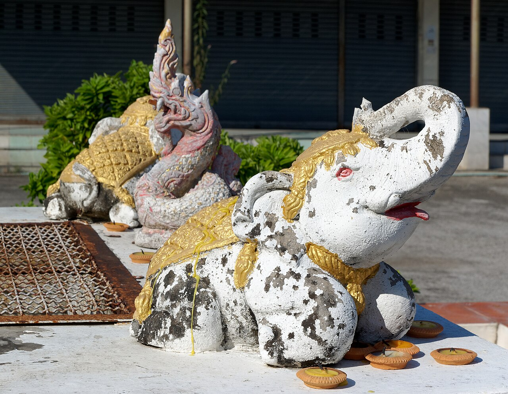

01 · Vietnam

Photo by Vyacheslav Argenberg via Wikimedia Commons · CC BY 4.0
Explore ten Vietnam destinations, from Hanoi, Ha Long Bay, and Ninh Binh to Hue, Hoi An, Ho Chi Minh City, and the Mekong Delta. Plan by region and interest.
Read the guide →02 · Thailand

Photo by Jakub Hałun via Wikimedia Commons · CC BY-SA 4.0
Plan a Thailand trip with ten varied stops: Bangkok, Chiang Mai, Ayutthaya, Sukhothai, Khao Sok, and southern beaches, matched to your pace. Plan by region.
Read the guide →03 · Japan

Photo by Basile Morin via Wikimedia Commons · CC BY-SA 4.0
Choose ten Japan stops by interest, from Tokyo, Kyoto, Osaka, and Nara to Kanazawa, Hiroshima, Hokkaido, Okinawa, and Koyasan. Plan around your trip time.
Read the guide →04 · Hanoi
Photo by Vyacheslav Argenberg via Wikimedia Commons · CC BY 4.0
Find ten Hanoi stops for first visits, quieter walks, food, and history, with ideas for choosing a public group activity and planning by neighborhood.
Read the guide →05 · Ho Chi Minh City

Photo by Tran Van Ngoc via Wikimedia Commons · CC0 1.0
Explore ten Ho Chi Minh City stops for history, markets, river views, art, and food, plus practical ways to choose a low-pressure group activity by district.
Read the guide →06 · Bangkok

Photo by Jakub Hałun via Wikimedia Commons · CC BY-SA 4.0
Plan a Bangkok day around ten temples, markets, neighborhoods, and river views, with quieter stops and ideas for food, culture, and group activities locally.
Read the guide →07 · Tokyo
Photo by David Kernan via Wikimedia Commons · CC BY 4.0
Find ten Tokyo places for classic landmarks, calmer neighborhood walks, museums, markets, and city views, then group them by the kind of day you want.
Read the guide →
Remember the people and places along the way.
Met helps you keep a note of an encounter and connect when you both choose to reveal.